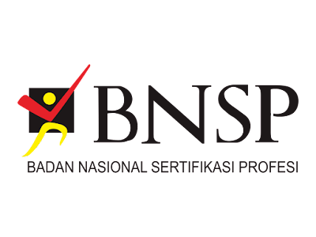

Visi
Terwujudnya program studi sistem informasi sebagai program studi yang
handal dan unggul dalam penyelenggaraan Tri Dharma Perguruan Tinggi,
unggul di bidang rekayasa sistem informasi di Wilayah Jawa Barat pada
tahun 2023.
PROFIL LULUSAN & PILIHAN KARIR
System Analyst, Data Analyst, Chief Information Officer (CIO),
Software Quality Assurance.
PROFIL PROGRAM STUDI FAKULTAS ILMU KOMPUTER
- Sistem Informasi S1
- Teknik Informatika S1
- Desain Komunikasi Visual S1
- Teknik Sipil
- Manajemen Informatika D3
KEGIATAN MBKM
- Magang
- Studi Independen
- Bangkit Academy
- Pertukaran Mahasiswa Merdeka (PPM) Nusantara
- International Credit Transfer (ICT)
PROGRAM UNGGULAN
- Pertukaran Mahasiswa ke University Utara Malaysia (UMM)
- Praktisi/Dosen Kompetensi dari Universitas Lain
PRESTASI MAHASISWA
- Juara 1 lomba Desain Cindramata 2018
- Juara Favorit lomba poster STiKKU 2017
- Mahasiswa Berprestasi UNIKU 2022
- Duta Putra Sosial Kuningan 2022
- Juara LIIDIKTI Konsep Garapan Terbaik Tingkat Jabar-Banten 2022
- PPK Ormawa
PROFIL ALUMNI MAHASISWA
| No | Nama | Angkatan | Pekerjaan | Jurusan |
|---|---|---|---|---|
| 1 | Ahmad Fauzi | 2015 | Software Developer | Sistem Informasi |
| 2 | Siti Fatimah | 2014 | Data Analyst | Teknik Informatika |
| 3 | Budi Santoso | 2013 | System Analyst | Sistem Informasi |
| 4 | Eka Rahmawati | 2016 | UI/UX Designer | Desain Komunikasi Visual |
| 5 | Rizky Maulana | 2012 | IT Consultant | Manajemen Informatika |
| 6 | Nur Aisyah | 2017 | Project Manager | Sistem Informasi |
| 7 | Gilang Ramadhan | 2018 | Network Engineer | Teknik Informatika |
| 8 | Lina Marlina | 2019 | Digital Marketer | Desain Komunikasi Visual |
| 9 | Heri Susanto | 2016 | Database Administrator | Sistem Informasi |
| 10 | Putri Andini | 2017 | Quality Assurance | Teknik Informatika |
| 11 | Ilham Pratama | 2013 | Security Engineer | Manajemen Informatika |
| 12 | Andi Firmansyah | 2015 | Backend Developer | Sistem Informasi |
| 13 | Maria Simanjuntak | 2014 | Frontend Developer | Sistem Informasi |
| 14 | Zahra Fadhilah | 2019 | IT Trainer | Sistem Informasi |
| 15 | Agus Subekti | 2012 | Cloud Engineer | Teknik Informatika |
| 16 | Citra Permata | 2015 | Mobile App Developer | Manajemen Informatika |
| 17 | Taufik Hidayat | 2013 | DevOps Engineer | Teknik Informatika |
| 18 | Umi Lestari | 2017 | Technical Writer | Sistem Informasi |
| 19 | Rina Salsabila | 2016 | Digital Content Creator | Desain Komunikasi Visual |
| 20 | Vina Salsabila | 2018 | Web Developer | Sistem Informasi |
| 21 | Dedi Supriadi | 2015 | SEO Specialist | Desain Komunikasi Visual |
| 22 | Kiki Handayani | 2014 | IT Auditor | Sistem Informasi |
| 23 | Oscar Wijaya | 2013 | Game Developer | Teknik Informatika |
| 24 | Fitri Hidayati | 2017 | Business Analyst | Sistem Informasi |
| 25 | Tommy Wibowo | 2018 | Cybersecurity Specialist | Teknik Informatika |
| 26 | Wahyu Ramdani | 2014 | Scrum Master | Sistem Informasi |
| 27 | Fajar Nugroho | 2013 | IT Support | Manajemen Informatika |
| 28 | Linda Agustina | 2015 | Software Engineer | Teknik Informatika |
| 29 | Bayu Pratama | 2016 | Product Manager | Sistem Informasi |
| 30 | Nanda Puspita | 2019 | Artificial Intelligence Engineer | Teknik Informatika |
SERTIFIKASI
